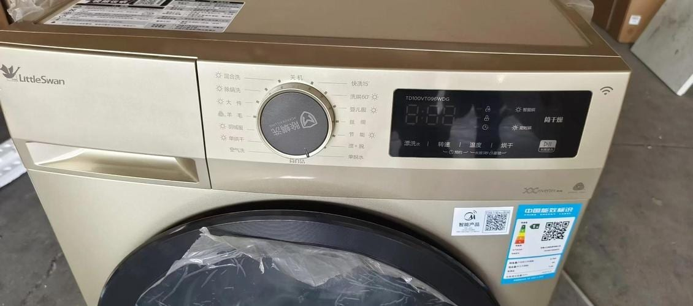

小天鹅 TD100V86 洗烘一体机

小天鹅水魔方系列洗烘一体机，10kg 洗涤搭配约 7kg 烘干，冷水洗科技减少衣物缠绕与褪色，冷凝烘干应对梅雨天应急干衣。程序覆盖羊毛、羽绒与空气洗，三千元档兼顾容量与功能，是小户型的务实选择。
客观评测
TD100V86 采用 BLDC 变频电机，约 1400rpm 脱水转速，10kg 洗涤容量搭配约 7kg 冷凝烘干。实测洗净比表现良好，水魔方水流对衣物缠绕控制优于普通波轮与入门滚筒，羊毛与羽绒程序运行平稳。冷凝烘干对薄衣物应急干衣够用，厚毛巾与外套烘干后仍略带潮气，需要追加晾晒。空气洗对火锅味外套的祛味效果明显，App 远程预约对上班族友好，整体是三千元档功能齐全的务实选择。
主观点评
梅雨季它就是救命稻草：洗完直接烘，第二天至少有几件能直接穿，不再为内裤袜子发愁。水魔方洗出来的深色衣服确实没那么容易发白，这点超出预期。当然厚衣服烘完还得晾，洗烘一体全程四五个小时也考验耐心；但对阳台小、没地方摆两台机器的家来说，它用一台的位置解决了洗与烘两件事，已经很难要求更多。
优点与不足
- 10kg 大容量洗全家衣物一次搞定，价格却很亲民
- 水魔方水流护衣，深色衣物洗涤褪色更少
- 空气洗祛味除尘，火锅烧烤后的外套救急神器
- 冷凝烘干效果一般，厚衣物需追加晾晒
- 洗烘全流程耗时较长，一次洗烘动辄数小时
参数规格
| 类型 | 洗烘一体机 |
|---|---|
| 洗涤容量 | 10 kg |
| 烘干容量 | 约 7 kg |
| 电机 | BLDC 变频电机 |
| 转速 | 约 1400 rpm |
| 能效 | 一级能效 |
| 洗烘方式 | 冷凝式烘干，洗烘一体 |
| 特色 | 水魔方水流，减少缠绕与磨损 |
| 功能 | 羊毛洗、羽绒洗、快洗、空气洗 |
| 除菌 | 高温煮洗 / 银离子除菌（视程序） |
| 智能 | App 远程控制与预约 |
| 噪音 | 洗涤约 48 dB(A)（约） |
| 尺寸 | 约 595 × 530 × 850 mm（约） |